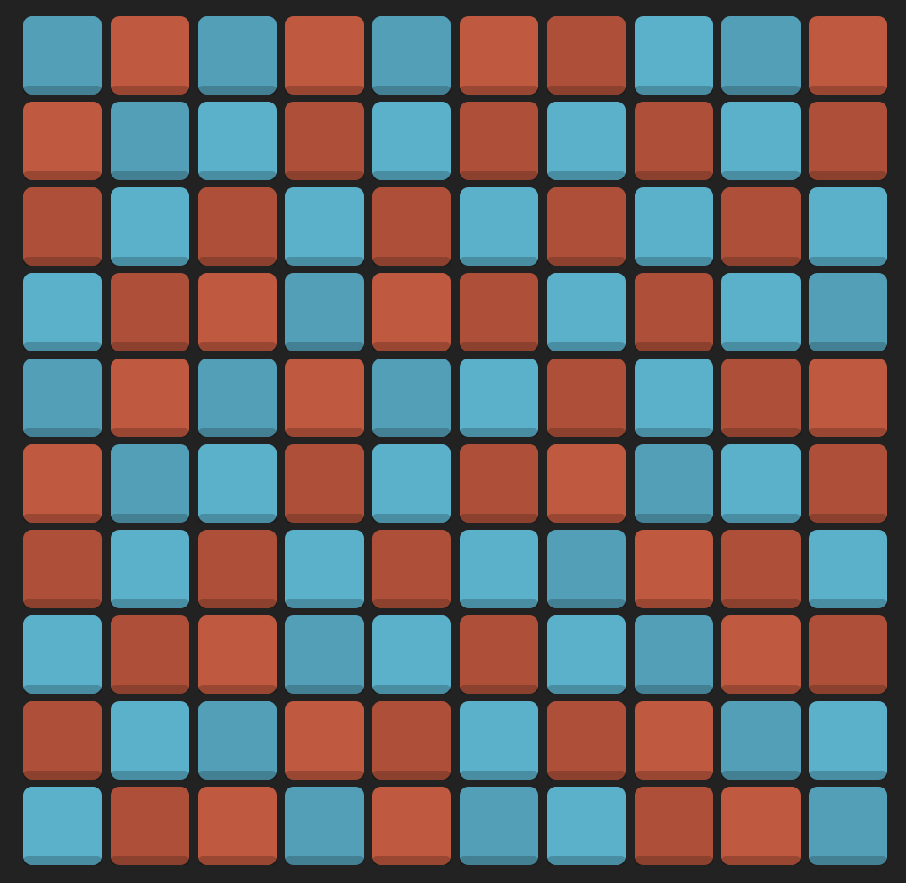
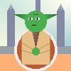
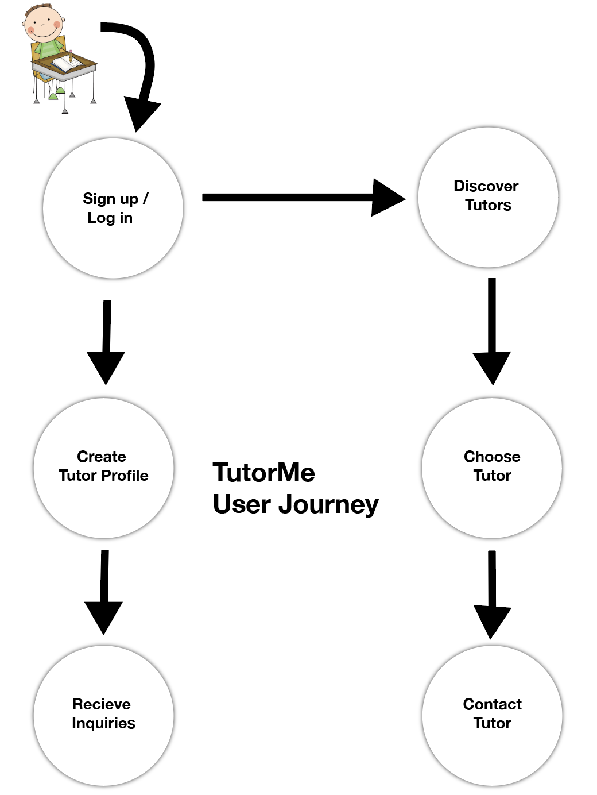

0HH1 is a logic game in which one must fill in a square board with blue chips and red chips within the constraints of certain rules. The rules include that no more than 2 chips of one color can be placed next to each other, the number of chips of each color is equal in rows and columns (ex. if board size is 6, there must be 3 red and 3 blue), and that no two rows or columns are the same. I created an artificial inteligence game solver that takes in the current board and analyzes the possibile outcomes and the rules to solve the game efficiently using conditional branches.
BMP Drawer
I created a program that takes .txt files filled with text descriptions of shapes and convert it into a colorful, complete .bmp drawing. The program reads characters in the input .txt file and based on the character, knows what shape to create, the size and location of the pixels, and the RGB color the drawer chooses. After creating the program that will process any .txt from any person, I made my own .txt file to utilize the program and ended up drawing this picture of Yoda in the Jedi Council Room!

Elevators
A game where a player can operate elevators in a building and make decisions about how to efficiently manage people's anger levels and wait times. For each turn, the program must move the game forward one time tick, adjust the anger levels, and move the elevators to where the algorithm requests. This project was mainly used to demonstrate the coding concept of classes, as we had to make a floor class, person class, elevator class, and so on, and implement individual objects within the classes for each floor, person, elevator, etc.
TutorMe
An app for University of Michigan students where users can register as tutors in courses they are knowledgeable in or search for tutors for courses they need help in. The tutors can list their own descriptions, contact information, prices, and qualifications, and users can reach out to those registered tutors directly through the app, as well as rate and submit feedback on the tutors to build up tutor ratings.
